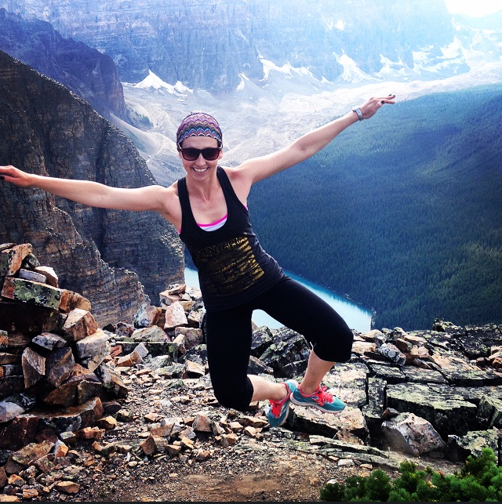

white Mountain
I have never in my life claimed to be an adventurer or outdoors lover – until I started hiking in the mountains. With the lovely, lush green forests and foothills, the tantalizing teal lakes hidden away like a secret prize waiting to be found, and those stunning sky-high jagged peaks, it was love at first sight. But more than that, hiking in the mountains became an immediate passion because of the way it made me feel. I was able to just be the real me and connect with the version of myself that felt the most authentic and true.
Being surrounded by the mountains has a powerful effect on something deeper. It’s as if being amidst something greater than ourselves, changes our perspective and insight on life and the things that really matter. Somehow without trying, you are able to confront your demons, re-evaluate your problems or your goals or your desires – you are able to widen your perspective and reflect on ‘the big picture’.
They have healing powers

Jumping for joy on top of a mountain
Call me crazy or cliche or what ever..but there is no denying it. Maybe it’s that dose of fresh mountain air, the exercise or the litres of water I drink when I’m hiking, but I swear to you that after a visit to the mountains I feel enormously better. It’s as if there is an energy source in those summits that you can tap into and feed off of. Getting out there literally fuels you and rebalances you; you will notably feel more calm and happy, and less irritable or anxious. There was never a time that I left the mountains without feeling refreshed, happy and inspired – ready to take on anything that came my way.